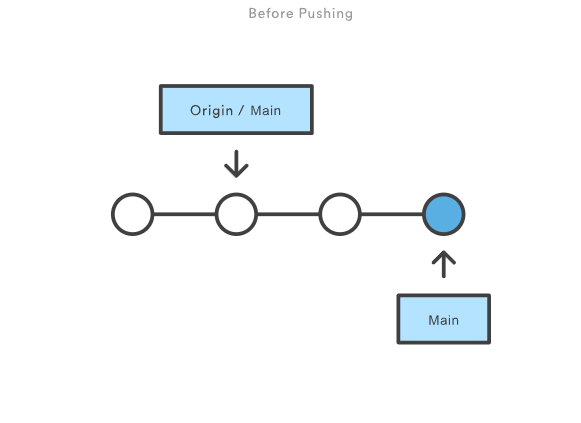
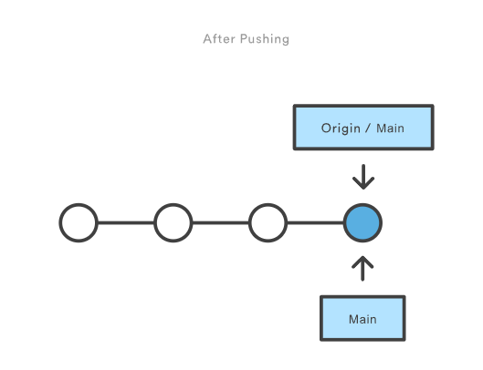

GIT-Push
Allgemeine Beschreibung zu diesem Befehl
Aktualisiert Remote-Daten mit lokalen Daten, während Objekte gesendet werden, die zum Vervollständigen der angegebenen Daten erforderlich sind.
Wann GIT-Push verwenden?
Git push wird üblicherweise verwendet, um lokale Änderungen in einem zentralen Repository zu veröffentlichen und hochzuladen. Nach dem Vornehmen von
Änderungen an einem lokalen Repository werden die Änderungen per Push für Teammitglieder an anderen Standorten freigegeben.Veröffentlichen von Änderungen mit "git push"


Das Diagramm oben verdeutlicht, was passiert, wenn dein lokaler master aktueller ist als der master des zentralen Repositorys und du Änderungen per git push origin master
veröffentlichst. Du siehst: git push arbeitet im Grunde genommen genauso wie git merge master im Remote-Repository.